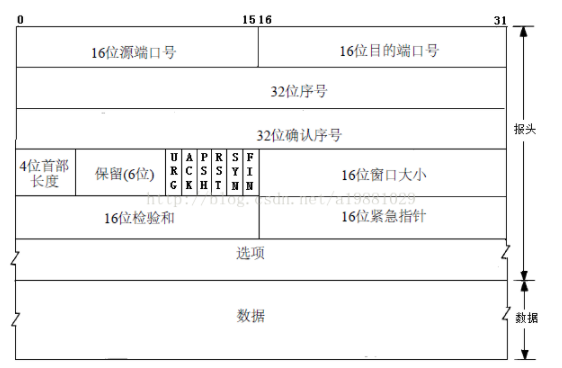
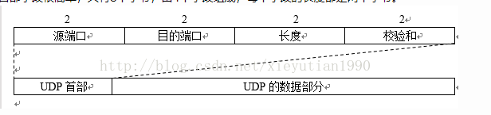

记录一下为面试准备的知识。
面试题来源牛客网面经，传送门——->https://www.nowcoder.com/discuss/61958?type=0&order=0&pos=18&page=13
###计网
TCP和UDP报头格式


TCP/UDP区别
tcp面向连接，具有三次握手四次挥手，并且由于存在seq和ack，保持数据的有序性并且实现可靠传输
udp无连接，面向数据报，不具有可靠性，但是优点在于报文头小，减小开销，比如传输视频
tcp是点对点的，因为tcp是面向连接，客户端和服务器端时一一对应的
udp是可以客户端对应服务器 一对多，多对一，一对一，多队多的，因为客户端向服务器发送数据报，如果成功到达服务器，会将数据放在一个消息队列中，上层应用再从这个消息队列中依次取出消息进行处理。
HTTP状态码（最好结合使用场景，比如在缓存命中时使用哪个）
| 状态码 | 状态 | 状态码 | 状态 | 状态码 | 状态 |
|---|---|---|---|---|---|
| 200 | OK | 304 | Not Modified | 400 | Bad Request |
| 401 | Unauthorized | 403 | Forbidden | 404 | Not Found |
| 405 | Method Not Allowed | 500 | Internal Server Error | 503 | Service Unavailable |
session机制、cookie机制
Cookie保存在客户端，Session保存在服务器端；
Cookie不是很安全，可以通过分析cookie进行cookie欺骗；考虑安全性应该使用session
Session会在一定时间内保存在服务器中，访问过多会影响服务器的性能。考虑性能应该使用cookie；
单个cookie大小不能超过4K；
考虑性能及安全性，可以在保存登录名及密码时，使用session，保存其他信息时使用cookie。
TCP三次握手、四次挥手
- 客户端将报文段中的SYN=1，并选择一个seq=x，(即该请求报文的序号为x) 将这个报文发送到服务器。此时，客户端进入同步已发送状态（SYN-SEND）.SYN报文段不能携带数据，但是要消耗掉一个序号。
- 服务器收到请求报文后，若同意建立连接，则回复报文中，SYN=1,ACK=1，并选择一个seq = y,且报文中确认号为x+1，序号为y.此时服务器进入同步已接收状态（SYN-RCVD）
- 客户端收到服务器的同步确认后，对服务器发送确认的确认。将ACK=1,确认号为y+1,而报文首部的序号为x+1，将该报文发出后，客户端进入已连接状态（ESTABLISHED）。
- 服务器收到客户端的确认后，也进入已连接状态。
注：当第三个ack丢失时，服务器端会隔段时间再次发送syn包，一直重复发送一定时长后，若无响应则关闭连接。
- 客户端向服务器发送FIN报文：FIN=1,序号seq=上一个最后传输的字节序号+1=u，发送后，客户端进入FIN-WAIT-1状态。
- 服务器接收到该报文后，发送一个确认报文：令ACK=1，确认序号ack = u+1,自己的报文序号seq=v，发送后，服务器进入CLOSE-WAIT状态。
- 此时TCP连接进入连接半关闭状态，服务器可能还会向客户端发送一些数据。
- 客户端收到来自服务器的确认之后，进入FIN-WAIT-2状态。等待服务器发送连接释放报文。
- 如果服务器已经没有要发送的数据，则释放TCP连接，向客户端发送报文：令FIN=1，ACK=1,确认号ack =u+1，自己的序号seq = w（w可能等于v也可能大于v），服务器进入LAST-ACK状态。
- 客户端收到服务器的连接释放报文后，对该报文发出确认，令ACK=1,确认号ack=w+1，自己的序号seq=u+1，发送此报文后，处于TIME_WAIT状态，等待2个msl时间后，进入CLOSED状态。
- 服务器收到客户端的确认后，也进入CLOSED状态并撤销传输控制块。
打开网页到页面显示之间的过程（涵盖了各个方面，DNS解析过程，Nginx请求转发、连接建立和保持过程、浏览器内容渲染过程，考虑的越详细越好）.
http和https区别，https在请求时额外的过程，https是如何保证数据安全的
参考链接：http://blog.csdn.net/jasonjwl/article/details/50985271
https可以说成两个阶段，一个是握手阶段，一个是数据传输阶段
在握手阶段，客户端服务器会协商出一个用于数据传输的对称密钥，在传输阶段，通过该密钥对数据进行加密，从而达到数据安全。
重点在于握手阶段，浏览器对服务器进行访问时，会得到服务器的证书（证书后续再谈，目前还不了解），从而得到服务器的公钥，浏览器生成一个密钥，也就是之前说的对称密钥，将该密钥通过公钥加密之后传给服务器端，服务器端私钥解密之后，双方协商出传输数据时用的密钥。
POST和GET区别
GET是请求服务器资源，POST是更改服务器资源或者新建，可以视为一种使用习惯
GET参数数据显示在url中，POST在报文中，但是我试着在url中放数据（仅限键值对数据类型）也可以~
POST可以提交的四种数据格式：
application/x-www-form-urlencoded：常见的表单数据
multipart/form-data：使用表单上传文件
application/json：json格式数据
text/xml：xml格式数据
DNS解析过程
递归查询和迭代查询
数据库
ACID
Atomic：原子性
Consistency：一致性
Isolation：隔离性
Durability：持久性
数据库隔离级别
| 隔离级别 | 脏读 | 不可重复读 | 幻读 |
|---|---|---|---|
| Read uncommitted | √ | √ | √ |
| Read committed–Sql Server , Oracle | × | √ | √ |
| Repeatable read – mysql默认 | × | × | √ |
| Serializable | × | × | × |
未提交读：如果一个事务已经开始写数据，则另外一个事务则不允许同时进行写操作，但允许其他事务读此行数据。该隔离级别可以通过“排他写锁”实现。
已提交读：读取数据的事务允许其他事务继续访问该行数据，但是未提交的写事务将会禁止其他事务访问该行。
可重复读：读取数据的事务将会禁止写事务（但允许读事务），写事务则禁止任何其他事务。